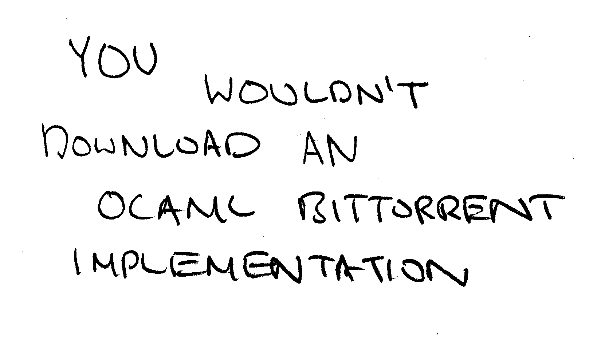
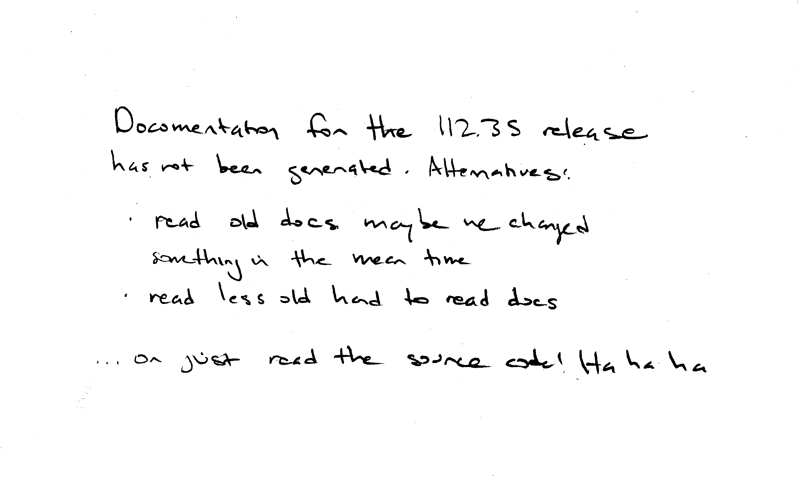

# A5: Notes on Async
<div id="toc">
</div>
<p style="text-align: center">

</p>
... so let's make one!
We on the A5 team are as excited as you are about your new project: to implement a BitTorrent client in OCaml.
And having walked the path you will soon be walking before, we feel bound to help you, as much as we can, to avoid stumbling on the same unnecessarily difficult things that tripped us up.
One such thing might be Async.
We think Async has very cool ideas and are glad that you're learning them.
At the same time, it's not fun to be right in the middle of implementing something when you realize that you need to look up some function that Async may or may not provide and are greeted with [this message](https://ocaml.janestreet.com/ocaml-core/latest/doc/)...
<p style="text-align: center">
:(" />
</p>
To try to prevent you from ending up in such a situation, we are doing three things in addition to the things we normally do, like hold office hours and answer questions on Piazza.
The first is to advise you to review the [recitations](http://www.cs.cornell.edu/courses/cs3110/2015fa/l/16-conc/rec.html) you've [had](http://www.cs.cornell.edu/courses/cs3110/2015fa/l/17-async/rec.html) on [Async](http://www.cs.cornell.edu/courses/cs3110/2015fa/l/18-monads/rec.html).
In particular, [R18: Async design patterns](http://www.cs.cornell.edu/courses/cs3110/2015fa/l/18-monads/rec.html) is relevant to this assignment.
We don't give this recommendation lightly &mdash; Professor George, who wrote the recitations, also came up with and led development on A5.
The second thing is to point you to [this course's own Async documentation](http://www.cs.cornell.edu/Courses/cs3110/2015sp/lectures/18/async/Async.Std.html), a comprehensive and condensed version of Async's documentation.
The third is to provide a section of Async's documentation (and the course's Async documentation) tailored to contain the functions we think you might need for this assignment.
That is this document.
We are writing it with the ability to look back at our own code and see what functions we used, so hopefully this will allow you to "look into the future" to see what you might need in your own code.
We hope this helps. Happy coding, and see you at the other end of the torrent!
# Reference
The names of all these functions are given relative to `Async.Std`, which you should load into your program's environment with `open Async.Std` at the top of your `.ml` file.
We'll only briefly go over some things you've should have been thoroughly introduced to in lecture and recitation.
We'll give longer descriptions for things you might not have seen before.
## Deferred.bind
`Deferred.bind d f` schedules `f` to be called with what `d` becomes determined to.
The whole call to `Deferred.bind` returns a `Deferred.t` that will become determined when the return result of `f` becomes determined.
<pre>
val Deferred.bind : 'a Deferred.t -> ('a -> 'b Deferred.t) -> 'b Deferred.t
</pre>
## >>=
`d >>= f` is identical to `Deferred.bind d f`.
The difference is that it is an infix operator, which is often more convenient.
<pre>
val ( >>= ) : 'a Deferred.t -> ('a -> 'b Deferred.t) -> 'b Deferred.t
</pre>
## Deferred.peek
`Deferred.peek d` returns an `option` that is `None` if the `Deferred.t` `d` is not yet determined or `Some x` if `d` has become determined to `x`.
Note that `Deferred.peek` does not return an `option Deferred.t` &mdash; it's "peeking" because it returns instantly.
<pre>
val Deferred.peek : 'a Deferred.t -> 'a option
</pre>
## Ivar.create, read, and fill
`Ivar.create ()` returns a new `Ivar.t`, `i`.
`i` can be "read" to create a `Deferred.t`, `d`, using `Ivar.read i`.
`d` will become determined to some value `x` when `Ivar.fill i x` is called.
`Ivar.t`s are how `Deferred.t`s are made.
<pre>
val Ivar.create : unit -> 'a Ivar.t
val Ivar.read : 'a Ivar.t -> 'a Deferred.t
val Ivar.fill : 'a Ivar.t -> 'a -> unit
</pre>
## Ivar.is_empty
`Ivar.is_empty i` returns `true` if `i` *hasn't* been filled and `false` otherwise.
<pre>
val Ivar.is_empty : 'a Ivar.t -> bool
</pre>
## Deferred.List.iter
`Deferred.List.iter` is useful when you have a function `f` that does something asynchronously, returning `unit Deferred.t`,, as well as a list whose elements you want to apply `f` on (and then wait for all of the `Deferred.t`s to become determined).
<pre>
val Deferred.List.iter : ?how:[`Parallel | `Sequential] -> 'a list -> f:('a -> unit Deferred.t) -> unit Deferred.t
</pre>
`how` defaults to <code>\`Sequential</code>, which means that by default `Deferred.List.iter` will wait for the `unit Deferred.t` returned by calling `f` on the first element of the list to become determined before recursing on the rest of the list.
### Example
<pre>
let lyrics = [
(0.2, "Dun ");
(0.2, "dun ");
(0.2, "dun ");
(2.4, "dun...\n");
(0.2, "Dun ");
(0.2, "dun ");
(0.2, "dun ");
(2.4, "dun...\n");
]
Deferred.List.iter ~how:`Sequential lyrics ~f:(fun (delay, line) ->
let () = print_string line ; Pervasives.flush stdout in
after (Core.Std.sec delay))
>>= fun () ->
return ()
</pre>
This example will print out:
<pre>
Dun dun dun dun...
Dun dun dun dun...
</pre>
... but with output delayed to evoke the rhythm of the famous opening by Beethoven.
If we had given <code>\`Parallel</code> as the argument to `how` instead of <code>\`Sequential</code>, all of the "dun"s would have output at the same time, which wouldn't be evocative of anything really.
## Deferred.don't\_wait\_for
It's weird to see a single quote in a function name!
`Deferred.don't_wait_for` is used to signify that you don't care about when some `Deferred.t` becomes determined.
It's acts like `let _ = (* something returning a Deferred *) in`, but makes sure that the thing you're *not* waiting for **really** is a `Deferred.t` as well as indicates your intent, which is always nice.
This metaphor isn't rigorous, but you might think of it as letting you start a separate branch of concurrent execution, whereas `>>=`s will give you sequential execution of the `fun`s you've defined surrounding them.
<pre>
val Deferred.don't_wait_for : Deferred.t -> unit
</pre>
### Example
<pre>
read_project_specification ()
>>= fun info ->
wait_for_partner_where_are_they ()
>>= fun () ->
let () = Deferred.don't_wait_for (order_calzones ()) in (* They'll call me when it arrives anyways... *)
work_on_project info
>>= fun work ->
submit_to_CMS work
</pre>
## after
`after s` returns a `unit Deferred.t` that becomes determined after `s` seconds.
**Note** that you can't just use a `float` for `s` &mdash; you need to wrap it using `Core.Std.sec` first.
<pre>val after : Core.Span.t -> unit Deferred.t</pre>
### Example
<pre>
let () = print_endline "A5 release in 3..." in
after (Core.Std.sec 1.0)
>>= fun () ->
let () = print_endline "2..." in
after (Core.Std.sec 1.0)
>>= fun () ->
let () = print_endline "1..." in
after (Core.Std.sec 1.0)
>>= fun () ->
let () = print_endline "Go!!" in
return ()
</pre>
## Pipes: Overview
The code and interfaces we provide you use Async's `Pipe.t`s in several places to as something similar to an asynchronous queue data structure.
Let's first consider a normal synchronous queue `q`.
We can enqueue a value `x` to `q`.
Later, when we calls dequeue on `q`, they will get `x`.
We will be dealing with FIFO queues.
That means that if we enqueue multiple values `x`, `y`, and `z`, subsequent calls to dequeue will first dequeue `x`, then `y`, then `z` &mdash; that is, the value we enqueued first comes out first (so the queue is "first-in-first-out").
For example:
<pre>
let q = Queue.make () in
Queue.enqueue q 1 ;
Queue.enqueue q 3 ;
Queue.enqueue q 5 ;
assert (Queue.dequeue q = 1) ;
assert (Queue.dequeue q = 3) ;
assert (Queue.dequeue q = 5)
</pre>
What happens if we try to dequeue an element from a queue that is empty?
We have several options: we might block until someone enqueues something, we might throw an exception if we consider dequeueing from an empty queue an invalid operation, we might even return an `'a option`.
Note that we know that we can interpret `Deferred.t`s as representing values that might become available to us some time in the future.
This sounds like the result of dequeue!
So an asynchronous queue's (at least the ones we're using) *enqueue* operation is the same.
On the other hand, it's *dequeue* operation is different.
Instead of returning a value, or throwing an exception of the queue is empty, we return an `'a Deferred.t`.
This `Deferred.t` will already be determined with an `'a` if the queue was not empty.
Otherwise, it will become determined when someone enqueues something for us to dequeue.
We still have a first-in-first-out order.
So where do `Pipe.t`s come into this?
In several places we provide you `Pipe.Reader.t`s or `Pipe.Writer.t`s (for example, as arguments to `Peer.create`).
You can think of a `Pipe.Reader.t` as representing the dequeuing end of an asynchronous queue, and `Pipe.Writer.t` as representing the enqueueing end of an asynchronous queue (possibly the same one).
Async's `Pipe.t`s support a lot of features, but you will probably only need to use a few of the defined functions.
Please remember you can think of pipe writing like enqueueing, and pipe reading like dequeueing.
These functions are described below.
Of course, if you want to use another `Pipe` function, feel free to.
## Pipe.create
`Pipe.create ()` returns a `(reader, writer)` pair containing the reader and writer ends of a brand new pipe.
<pre>
val Pipe.create : unit -> 'a Pipe.Reader.t * 'a Pipe.Writer.t
</pre>
## Pipe.write
`Pipe.write w x` writes `x` to the `Pipe.Writer.t` `w` and returns a `unit Deferred.t` that becomes determined when the value `x` is read from the Pipe.
Depending on how you structure your code, you might want `Pipe.write_without_pushback` instead.
<pre>
val Pipe.write : 'a Pipe.Writer.t -> 'a -> unit Deferred.t
</pre>
## Pipe.write_without_pushback
`Pipe.write_without_pushback w x` writes `x` to the `Pipe.Writer.t` `w` and returns `unit`.
That is, it writes `x` to `w` without waiting for someone to read from the reader end of the pipe, as opposed to `Pipe.write`, which returns a `unit Deferred.t`.
<pre>
val Pipe.write : 'a Pipe.Writer.t -> 'a -> unit
</pre>
Depending on how you structure your code, you might want `Pipe.write` instead.
## Pipe.read
`Pipe.read r` tries to read from the `Pipe.Reader.t` `r` and returns a `Deferred.t` that becomes determined with `Ok x` if some value `x` is written or <code>\`Eof</code> if the pipe has been closed.
<pre>
val Pipe.read : 'a Pipe.Reader.t -> [`Eof | `Ok of 'a] Deferred.t
</pre>
## Pipe.downstream_flushed
`Pipe.downstream_flushed p` returns a `Deferred.t` that becomes determined when all the things written to the pipe `p` (you provide either the reader or writer end) have been read.
The `Deferred.t` becomes has the type <code>[\`Ok | \`Reader_closed] Deferred.t</code>.
It becomes determined to <code>\`Ok</code> when all of the things that have been written to the pipe have been read, or <code>\`Reader_closed</code> when the reader end has been closed.
<pre>
val Pipe.downstream_flushed : ('a, 'b) Pipe.t -> [`Ok | `Reader_closed] Deferred.t
</pre>
The `('a, 'b)` looks weird, but it just means that `Pipe.downstream_flushed` can take either a reader or writer pipe.
The `Pipe` module uses a design pattern called phantom types, like the `Bitfield` module we've provided you &mdash; see the comments we put in there for a bit of a start on how they work (they're not magic, and they're not (too) spooky!).
## Pipe.close, Pipe.close_read
`Pipe.close w` closes the writer end of a pipe &mdash; that means that nothing more can be written to the pipe (an exception will be thrown).
If there's still values in the pipe, you will be able to read them until the pipe is empty, after which all `Pipe.read`s will return <code>`Eof</code>.
`Pipe.close_read r` does the same thing as `Pipe.close w` would have done on the the writer end of the pipe, except that *also*:
* The `Deferred.t`s returned by `Pipe.downstream_flushed` will become determined to <code>`Reader_closed</code>
* Even if there are still values in the pipe that haven't been read, subsequent reads will only get <code>`Eof</code>.
Note that this means that if you call `Pipe.close_read`, you don't need to call `Pipe.close` (because `Pipe.close_read` does everything `Pipe.close` does, and more).
<pre>
val Pipe.close : 'a Pipe.Writer.t -> unit
val Pipe.close_read : 'a Pipe.Reader.t -> unit
</pre>